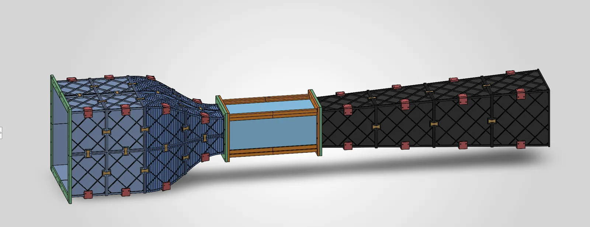

A tabletop subsonic wind tunnel, designed end to end
A 6:1 contraction on a ₹10,000 university grant. I own the design, from the first sizing calculation to the electronics.
- With
- Dr. Vivek Kumar (supervisor)
- Funding
- Chattra Pariyojana Vittiya Sahayata (CPVS) project grant, NSUT, ₹10,000
- My part
- The whole design: sizing, contraction CFD, structural FEA, drive and measurement electronics
- Tools
- ANSYS Fluent, ANSYS Static Structural, SolidWorks
- Status
- Design complete; fabrication under way
This page is a piano roll. Its keys run down the left edge: click one, or click the paper to punch a note. Scrolling plays it.

What I did
- Sizing calculations for each of the four sections.
- CFD of the contraction in ANSYS Fluent, to shape the nozzle for even flow in the test section.
- Static-structural FEA, to cut wall thickness and printed mass without losing stiffness.
- The drive and measurement electronics.
Why a contraction
Air this slow is effectively incompressible, so continuity says the flow leaves a 6:1 contraction six times faster than it enters. That speed-up is the point: it shrinks whatever unevenness the flow carries from the settling chamber, relative to the speed in the test section, which is where a model sits and where the flow needs to be even.
A₁V₁ = A₂V₂
The trade
Every millimetre the FEA took out of a wall had to be checked against what the CFD needed from it. Thinner walls print faster and lighter, but the contraction only works if its shape holds.
Now
The design is complete. I’m optimising the structure to use less material, and fabrication is under way.